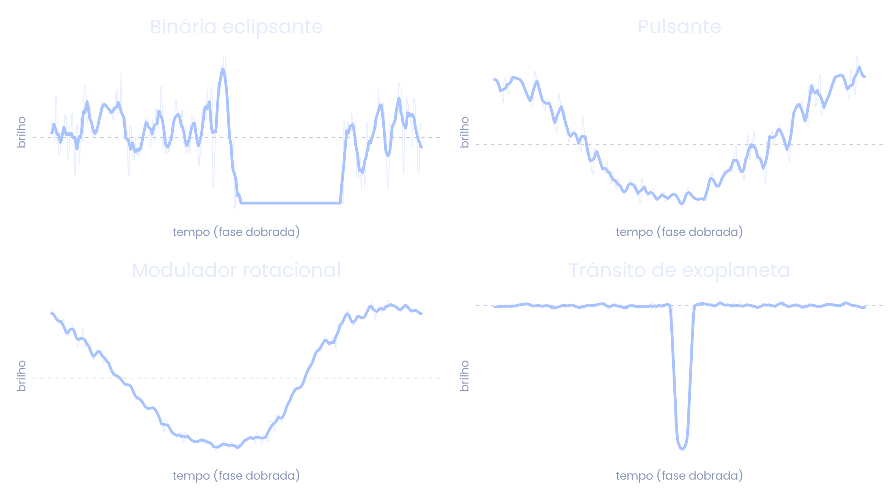
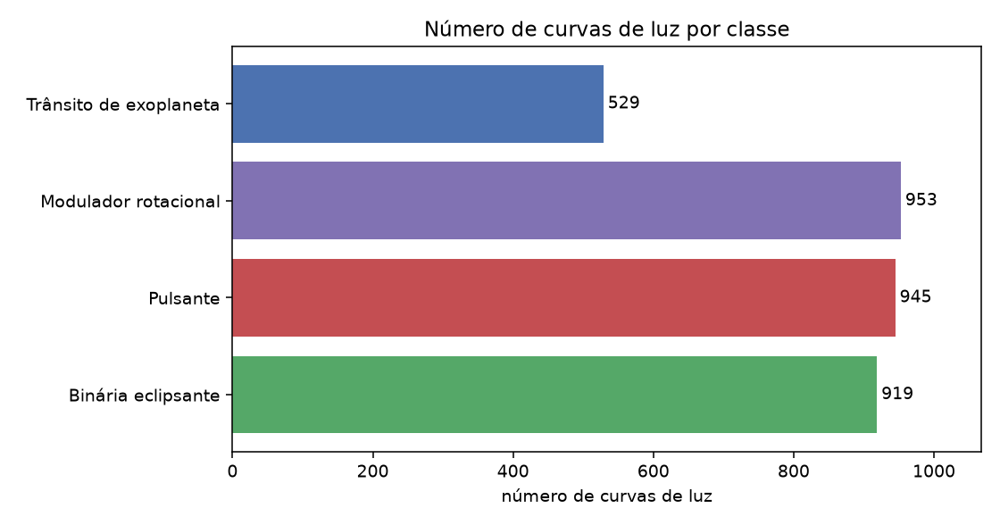
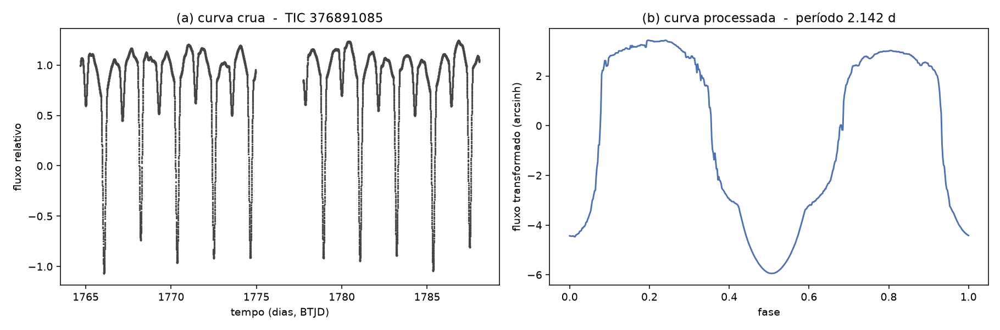
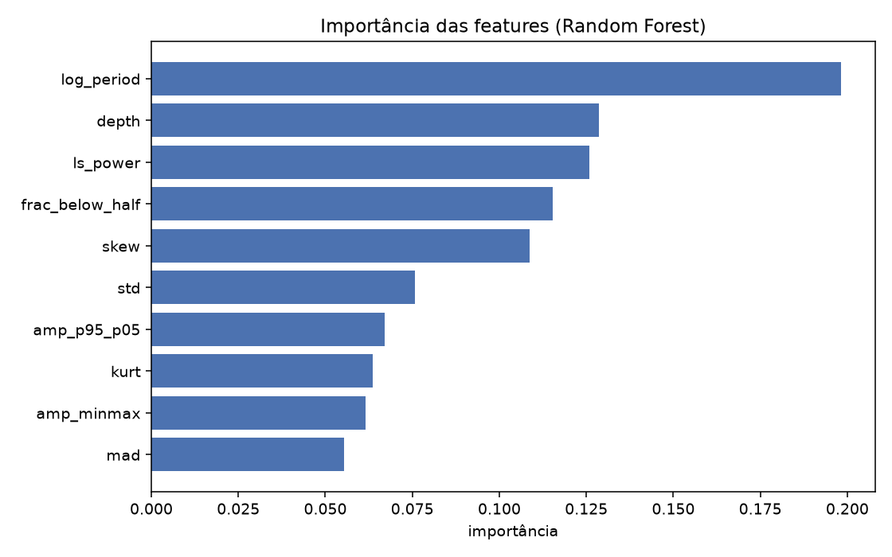
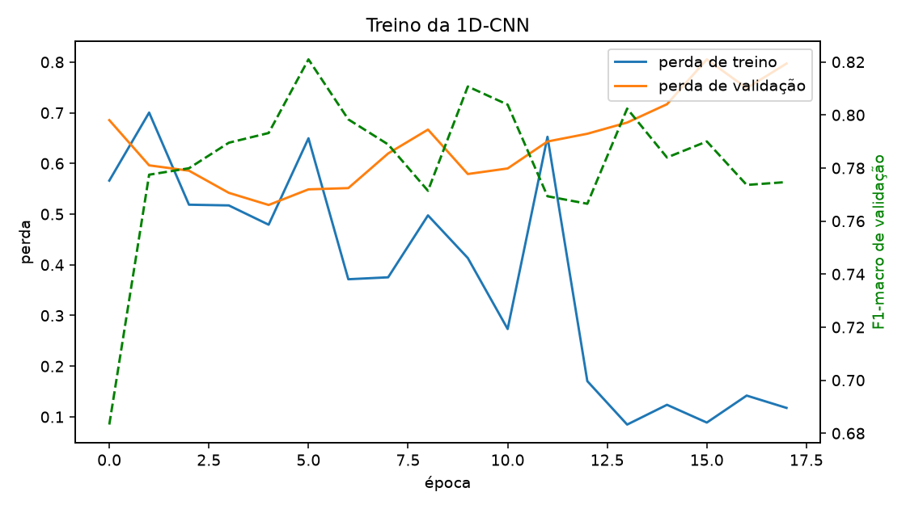
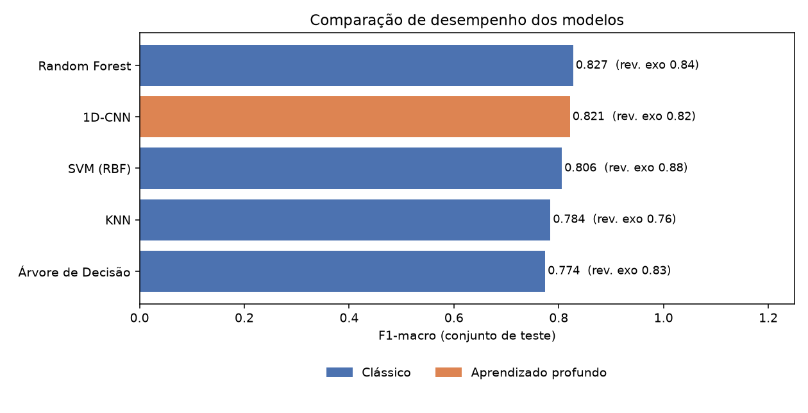
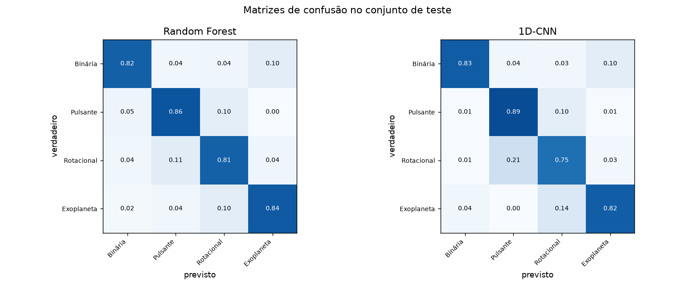
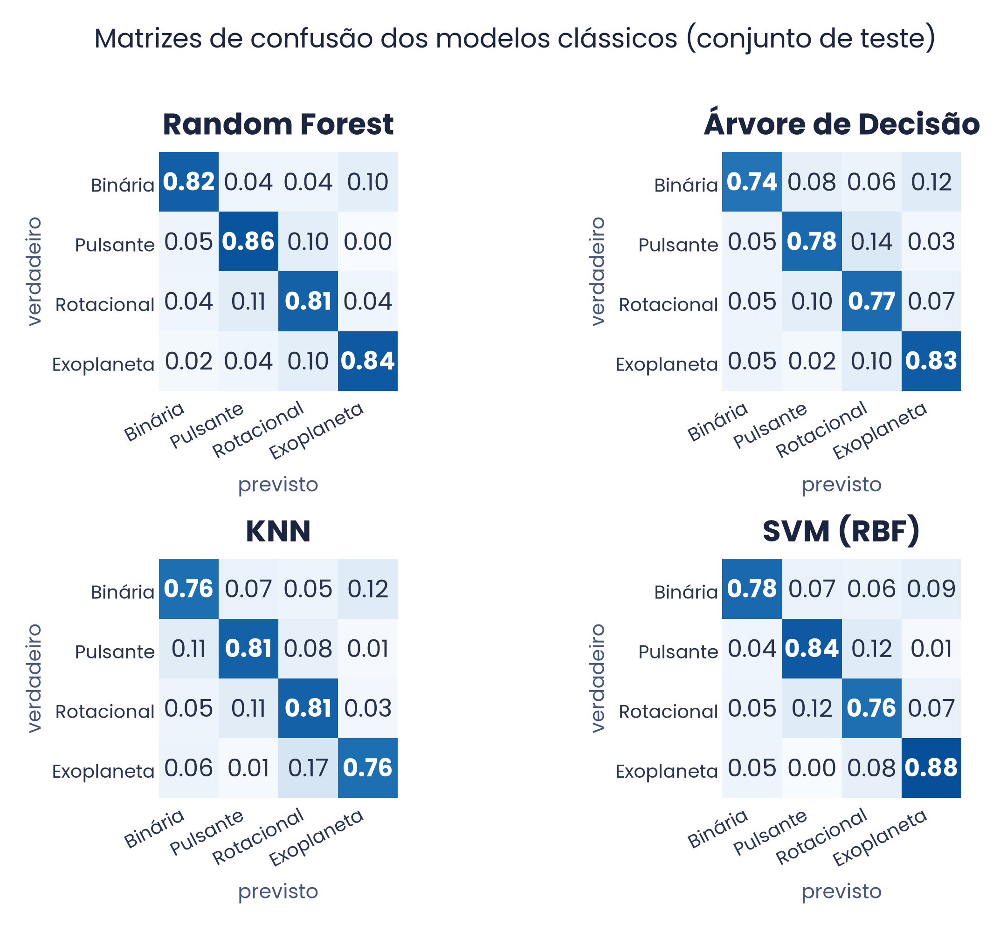

O brilho de uma estrela muda por vários motivos: manchas, exoplanetas, sistemas binários, pulsações.
Usar classificação multiclasse para identificar a causa da variação.
Séries temporais, onde cada valor é a luminosidade da estrela em um instante.
O telescópio TESS observa milhões de estrelas: classificar na mão é inviável.
Quando uma estrela passa na frente da outra, o brilho cai. Eclipse da estrela brilhante: vale fundo. Da estrela fraca: vale raso.
O tamanho e a temperatura mudam juntos, então o brilho sobe e desce de forma suave e periódica, como uma onda.
A mancha some e reaparece a cada giro. O brilho cai quando ela está virada para nós, gerando uma variação lenta, parecida com a pulsante.
O planeta tapa uma fração mínima da estrela, então a queda é rasa e curta. É a classe mais rara e a de maior interesse.

Cada curva é um ciclo dobrado em fase (linha clara = dado bruto). Pulsante e rotacional ficam parecidas, a maior fonte de erro; o trânsito é uma queda fina e rasa.
| Trabalho | Ano | Problema tratado | Modelo | Resultado |
|---|---|---|---|---|
| Wang et al. | 2025 | Variáveis (sem exoplaneta) | Random Forest | milhares |
| Liu et al. | 2026 | Subtipos de binária | Rede densa + Autoencoder | 99% |
| Tey et al. | 2023 | Exoplaneta: sim ou não | 1D-CNN | 99,6% |
| Iglesias et al. | 2023 | Exoplaneta: sim ou não | 1D-CNN | 99% |
| Cuéllar et al. | 2022 | Exoplaneta: sim ou não | 2D-CNN | 98% |
| Este trabalho | 2026 | As 4 classes juntas | Random Forest e 1D-CNN | — |
Os outros separam o problema. Aqui, um único modelo decide entre as quatro classes ao mesmo tempo.
Triple-9: 999 candidatos a exoplaneta verificados.
TESS-EBs: 4584 binárias eclipsantes.
Gaia DR3: pulsantes e moduladoras de rotação.


Esquerda: crua. Direita: dobrada, limpa e centralizada.
Extraímos 10 atributos físicos da curva, como período e profundidade, e treinamos:
Uma rede convolucional 1D recebe os 512 pontos e aprende sozinha os padrões da forma da curva.
Sem escolher atributos na mão.
Comparação justa: mesma divisão de 80% treino e 20% teste para todos.

Os mais fortes fazem sentido físico: período, profundidade da queda e força da periodicidade.
Removemos 2 atributos que eram vazamento de informação: diziam a origem do dado, não a física. Mantê-los inflaria o resultado.
As camadas convolucionais procuram padrões locais na curva. O treino para no melhor momento, antes de a rede decorar os dados.

Perdas de treino e validação caem juntas e o F1 sobe: a rede não decorou os dados.

O modelo clássico (Random Forest) praticamente empatou com a rede profunda. O SVM recuperou mais exoplanetas.

Binária e exoplaneta são bem separadas. A maior confusão é entre pulsante e rotacional, que de fato se parecem.

A mesma história em todos: o exoplaneta se separa bem; pulsante e rotacional concentram os erros.
Um só modelo para as 4 classes, com dados reais de catálogos.
Random Forest e 1D-CNN praticamente iguais. Atributos físicos bastaram.
Removemos o vazamento de informação para um número confiável.
Futuro: mais exoplanetas, separar melhor pulsante de rotacional e redes maiores.